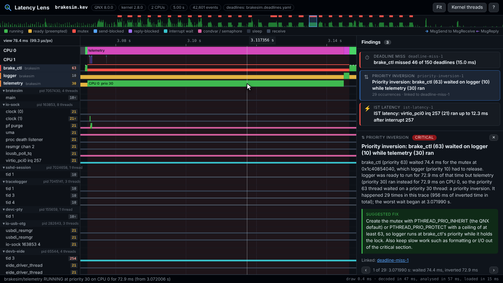
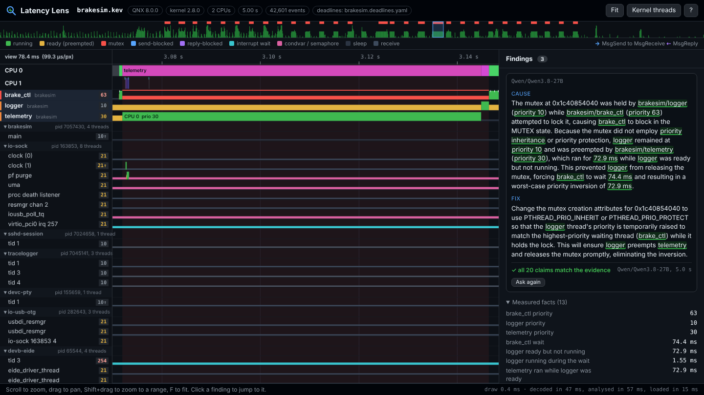
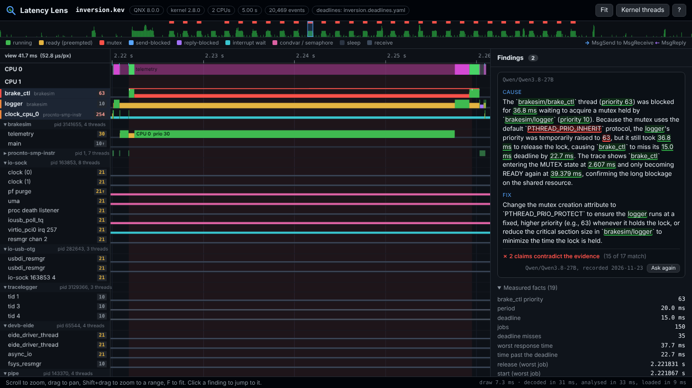
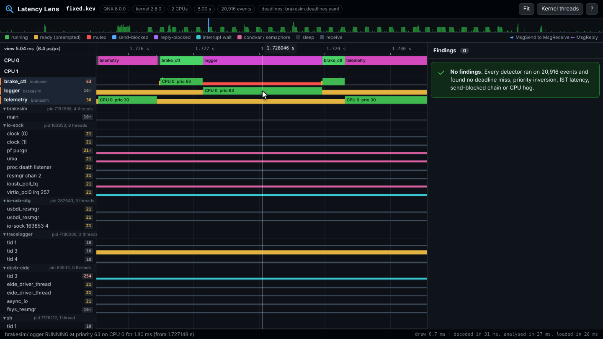

A brake controller on QNX misses a third of its deadlines. Its code looks fine, its priorities look right, and the bug only shows up when three threads line up in time. In this codelab you will catch it the way real-time engineers do: record what the kernel did, then read the trace. Latency Lens does the reading for you.
What you'll do
- Build a small, deliberately buggy brake controller for QNX OS 8.0 with
qcc. - Boot QNX OS 8.0 in QEMU and record a kernel event trace with
tracelogger. - Open the trace in Latency Lens, which finds the deadline misses and the priority inversion behind them, with the exact kernel events as evidence.
- Optionally ask an LLM to explain the finding, with every number it writes checked against the trace.
- Fix the bug with a priority-inheritance mutex, capture again and prove the fix.
What you'll learn
- What a QNX kernel trace records: thread states, priorities, kernel calls, interrupts and messages.
- How a priority inversion looks on a timeline, and why
PTHREAD_PRIO_INHERITfixes it. - How to tell a scheduling bug from platform latency, and how to gate CI on deadlines.
What you'll need
- A Linux x86_64 machine (a VM or container works; KVM is used when present, otherwise QEMU emulates).
- A free myQNX account with a QNX SDP 8.0 non-commercial license.
- Node.js 20 or newer and pnpm, git, QEMU and an ssh client.
The QNX Software Development Platform (SDP) 8.0 gives you qcc (the QNX compiler driver),
mkqnximage (builds a bootable QNX image) and the trace tools. If you already have it in
~/qnx800, skip to the last command of this step.
Sign in to myQNX and download the QNX Software Center installer (put your myQNX user and password in
MYQNX_USER and MYQNX_PASSWORD first):
mkdir -p ~/.qnx curl --cookie-jar ~/.qnx/myqnxcookies.auth --form "userlogin=$MYQNX_USER" --form "password=$MYQNX_PASSWORD" -X POST https://www.qnx.com/account/login.html -o /dev/null curl -L --cookie ~/.qnx/myqnxcookies.auth https://www.qnx.com/download/download/79441/qnx-setup-2.0.4-202501021438-linux.run -o qnx-setup-lin.run chmod a+x qnx-setup-lin.run ./qnx-setup-lin.run force-override disable-auto-start agree-to-license-terms ~/qnxinstall
Activate your license and install the SDP 8.0 baseline (about 3.6 GB):
QSC=~/qnxinstall/qnxsoftwarecenter/qnxsoftwarecenter_clt $QSC -syncLicenseKeys -myqnx.user="$MYQNX_USER" -myqnx.password="$MYQNX_PASSWORD" -activateAll $QSC -mirror -cleanInstall -installBaseline com.qnx.qnx800 -destination ~/qnx800 -myqnx.user="$MYQNX_USER" -myqnx.password="$MYQNX_PASSWORD"
Install QEMU and ssh, then load the SDP into your shell and check the compiler:
sudo apt-get install -y qemu-system-x86 openssh-client socat source ~/qnx800/qnxsdp-env.sh qcc -V
QNX_HOST=/home/you/qnx800/host/linux/x86_64 QNX_TARGET=/home/you/qnx800/target/qnx MAKEFLAGS=-I/home/you/qnx800/target/qnx/usr/include cc: targets available in /home/you/qnx800/host/linux/x86_64/etc/qcc: 12.2.0,gcc_ntoaarch64le_gpp 12.2.0,gcc_ntox86_64 (default) 12.2.0,gcc_ntox86_64_gpp 12.2.0,gcc_ntoaarch64le ...
Latency Lens runs on the host. It reads .kev trace files itself, so opening a trace needs
no QNX installation at all.
# no pnpm yet? run: corepack enable
git clone https://github.com/chinesepowered/hack-qnx-latencylens.git ~/hack-qnx-latencylens
cd ~/hack-qnx-latencylens
pnpm install
pnpm buildbuilt dist/cli.js and dist/web/
Now make a workspace with the sample program, its deadline file, and two short commands on your
PATH: latencylens and qnx-vm (a helper that builds, boots and talks to a QNX
virtual machine).
mkdir -p ~/brakesim-demo/bin cd ~/brakesim-demo ln -s ~/hack-qnx-latencylens/bin/latencylens.mjs bin/latencylens ln -s ~/hack-qnx-latencylens/scripts/qnx-vm.sh bin/qnx-vm export PATH="$HOME/brakesim-demo/bin:$PATH" cp ~/hack-qnx-latencylens/samples/src/brakesim.c ~/hack-qnx-latencylens/samples/src/ll_common.h . cp ~/hack-qnx-latencylens/demo/traces/brakesim.deadlines.yaml . ls
bin brakesim.c brakesim.deadlines.yaml ll_common.h
qnx-vm image runs the SDP's mkqnximage (--type=qemu --arch=x86_64) with an
ssh key baked in. qnx-vm start boots it in QEMU with ssh forwarded to port 2222 of your
host; it uses KVM when /dev/kvm is writable and QEMU's TCG emulator otherwise.
ls ~/.ssh/qnxvm_ed25519 || ssh-keygen -t ed25519 -N '' -f ~/.ssh/qnxvm_ed25519 qnx-vm image qnx-vm start qnx-vm ssh uname -a
Generating output/build/startup.sh ... Building disk . . . Target type: qemu Architecture: x86_64 ... qnx-vm: booting (pid 22303), serial log: /home/you/qnxvm/output/serial.log qnx-vm: ssh ready after 14 s QNX latencylens 8.0.0 2026/10/30-09:10:05EDT x86pc x86_64
That last line comes from the QNX target: QNX OS 8.0 for x86_64, running in QEMU.
brakesim.c runs three SCHED_FIFO threads pinned to CPU 0:
| Thread | Priority | What it does |
|---|---|---|
| brake_ctl | 63 | Every 20 ms: computes a brake pressure, appends a record to the log under log_lock. Deadline 15 ms. |
| telemetry | 30 | Every 100 ms: a 30 ms burst of CPU work. |
| logger | 10 | Every 100 ms: takes log_lock and formats the log for 2 ms. |
Priorities look right: the brake loop is highest. The bug is one line:
/* The protocol of log_lock. BUG: this line came over from a Linux port, where PTHREAD_PRIO_NONE is
* the default. QNX's own default is PTHREAD_PRIO_INHERIT ... */
#define LOG_LOCK_PROTOCOL PTHREAD_PRIO_NONE
...
pthread_mutexattr_setprotocol(&ma, LOG_LOCK_PROTOCOL);
pthread_mutex_init(&log_lock, &ma);Each brake job also marks its start and end in the trace with TraceEvent(), so Latency Lens
can measure every job's response time:
TraceEvent(_NTO_TRACE_INSERTSUSEREVENT, 100, seq, late_us); /* job begins */ ... TraceEvent(_NTO_TRACE_INSERTSUSEREVENT, 101, seq, resp_us); /* job ends */
Build it with qcc for x86_64, copy it to the target and run it for 3 seconds:
qcc -Vgcc_ntox86_64 -O2 -o brakesim brakesim.c qnx-vm put brakesim /tmp/brakesim qnx-vm ssh /tmp/brakesim -s 3
brakesim: protocol=PTHREAD_PRIO_NONE brake_ctl: 150 jobs, 34 deadline misses (deadline 15.0 ms), worst response 43.53 ms
About a third of the jobs are late, some by almost 30 ms. Why? Time to look inside.
tracelogger records the kernel's instrumentation into a .kev file. Start it, give it a
second, run the program, and wait for both:
qnx-vm ssh 'tracelogger -w -s 5 -f /dev/shmem/brakesim.kev & sleep 1; /tmp/brakesim -s 3; wait' qnx-vm get /dev/shmem/brakesim.kev .
brakesim: protocol=PTHREAD_PRIO_NONE brake_ctl: 150 jobs, 35 deadline misses (deadline 15.0 ms), worst response 43.02 ms
| Option | Meaning |
|---|---|
-w | Wide mode: thread events carry the priority, kernel calls carry their arguments. Latency Lens needs it. |
-s 5 | Log for 5 seconds, then stop. |
-f | Output file. /dev/shmem is RAM, so writing the trace does not disturb the timing. |
The file is about 1.6 MB: some 21,000 kernel events in 5 seconds. Reading them by hand would take a while.
The deadline file tells Latency Lens which thread is periodic and how late is too late:
threads:
- name: brake_ctl # 50 Hz brake-pressure control loop
period: 20ms
deadline: 15ms
markers: { begin: 100, end: 101 } # TraceEvent() job markers emitted by brakesimlatencylens report brakesim.kev --deadlines brakesim.deadlines.yaml --format summary; echo "exit status $?"
brakesim.kev: 2 findings (QNX 8.0.0, 2 CPUs, 5.00 s, 21,029 events) CRITICAL deadline-miss-1 brake_ctl missed 35 of 150 deadlines (15.0 ms) CRITICAL priority-inversion-1 Priority inversion: brake_ctl (63) waited on logger (10) while telemetry (30) ran exit status 1
In well under a second it measured every job against the deadline and found what delayed them. The
full report (--format md) explains each finding:
brake_ctl (priority 63) waited 42.1 ms for the mutex at 0x3a33423040, which logger (priority 10) had to release. logger was ready to run for 37.5 ms of that time but telemetry (priority 30) ran instead for 37.5 ms on CPU 0, so the priority 63 thread waited on a priority 30 thread: a priority inversion. It happened 28 times in this trace (855 ms of inverted time in total); the worst wait began at 3.942756 s.
latencylens open brakesim.kev --deadlines brakesim.deadlines.yaml
Latency Lens: brakesim.kev: 2 findings http://127.0.0.1:7878/ (Ctrl+C to stop)
Open http://127.0.0.1:7878/. The timeline has one lane per CPU and one per thread, grouped by process. Scroll to zoom, drag to pan, press F to fit the whole trace.
Click the Priority inversion finding. The timeline jumps to the worst occurrence and pins the three threads involved to the top:

| Lane | What you see |
|---|---|
| brake_ctl (63) | red: blocked on a mutex (STATE_MUTEX) for the whole window. |
| logger (10) | yellow: ready, holding the mutex, but not allowed to run. |
| telemetry (30) | green: running on CPU 0, priority 30. |
Hover a lane to read its state, priority and duration in the status bar. The panel lists the measured
facts and the evidence: the exact kernel events, from SyncMutexLock with the owner of the
mutex to the unlock that finally lets brake_ctl go. Hover an evidence row to see where it sits on the
timeline. N and P step through every occurrence.
Latency Lens is complete without an LLM. If you have a key for an OpenAI-compatible endpoint, it can
also write the cause and the fix in plain words. It sends only this finding and its evidence events.
Create .env in ~/brakesim-demo (it is read from the working directory or any parent):
OPENAI_BASE_URL=https://api.inference.wandb.ai/v1 OPENAI_API_KEY=your-wandb-api-key OPENAI_MODEL=Qwen/Qwen3.8-27B OPENAI_FALLBACK_MODEL=zai-org/GLM-5.3-Flash
Restart latencylens open, select the inversion and click Explain this:

The check is code, not another model. When an answer gets a fact wrong, the claim is struck out in
red. This recorded answer claimed that the mutex used PTHREAD_PRIO_INHERIT and that the
logger was raised to priority 63; the trace shows the logger at priority 10 the whole time, so both
claims are struck out:

The same from the command line, for scripts:
latencylens explain brakesim.kev --deadlines brakesim.deadlines.yaml --finding priority-inversion-1
With PTHREAD_PRIO_INHERIT, a thread holding the mutex runs at the priority of the
highest-priority thread waiting for it. The logger then outranks telemetry for the 2 ms it needs, and the
brake loop gets its lock back almost at once. It is QNX's default protocol; the sample overrode it.
cp brakesim.c brakesim.c.orig sed -i 's/PTHREAD_PRIO_NONE$/PTHREAD_PRIO_INHERIT/' brakesim.c diff -u brakesim.c.orig brakesim.c
--- brakesim.c.orig +++ brakesim.c @@ -36,7 +36,7 @@ * the default. QNX's own default is PTHREAD_PRIO_INHERIT: the owner of the lock runs at the priority * of the highest-priority thread waiting for it. Change this line to fix the sample. */ #ifndef LOG_LOCK_PROTOCOL -#define LOG_LOCK_PROTOCOL PTHREAD_PRIO_NONE +#define LOG_LOCK_PROTOCOL PTHREAD_PRIO_INHERIT #endif #define BRAKE_PERIOD LL_MS(20)
Rebuild, capture again, and ask Latency Lens:
qcc -Vgcc_ntox86_64 -O2 -o brakesim brakesim.c && qnx-vm put brakesim /tmp/brakesim qnx-vm ssh 'tracelogger -w -s 5 -f /dev/shmem/fixed.kev & sleep 1; /tmp/brakesim -s 3; wait' qnx-vm get /dev/shmem/fixed.kev . latencylens report fixed.kev --deadlines brakesim.deadlines.yaml --format summary; echo "exit status $?"
brakesim: protocol=PTHREAD_PRIO_INHERIT brake_ctl: 150 jobs, 0 deadline misses (deadline 15.0 ms), worst response 4.64 ms fixed.kev: no findings (QNX 8.0.0, 2 CPUs, 5.00 s, 21,345 events) exit status 0
Zero misses, worst response 4.6 ms instead of 43 ms, and a clean report with exit status 0.
latencylens open fixed.kev --deadlines brakesim.deadlines.yaml
The panel says No findings. Zoom into any moment where brake_ctl blocks on the mutex (red): the logger now runs at priority 63 until it unlocks, typically for less than 2 ms, and telemetry waits.

The kernel logs a thread's priority with every state change, so the boost is in the trace itself. In the buggy trace the same lane said "READY at priority 10".
latencylens report exits with status 1 when a deadline was missed, 0 when every job made it,
and 2 on errors, so a trace captured by your test rig can fail a build:
latencylens report brakesim.kev --deadlines brakesim.deadlines.yaml --format md > report.md; echo "exit status $?" latencylens report fixed.kev --deadlines brakesim.deadlines.yaml --format md > report.md; echo "exit status $?"
exit status 1 exit status 0
--fail-on any fails on any finding, --fail-on none only reports, and
--format json gives machine-readable findings with their evidence. In a GitHub Actions job:
- name: Check the captured trace against the deadlines run: node latencylens/bin/latencylens.mjs report trace.kev --deadlines deadlines.yaml --format md >> "$GITHUB_STEP_SUMMARY"
You found a priority inversion in a QNX kernel trace, fixed it with one line, and proved the fix with a second trace. Capy approves.
What you've learned
tracelogger -wrecords thread states with priorities, kernel calls with arguments, interrupts and messages, andTraceEvent()adds your own markers.- A priority inversion is a high-priority thread blocked on a lock whose low-priority holder is kept
off the CPU by a medium-priority thread.
PTHREAD_PRIO_INHERIT, QNX's default, prevents it. - Not every late job is a scheduling bug: platform latency looks different in a trace, and Latency Lens says which one you have.
Clean up
qnx-vm stop
Keep going
- The other sample traces show the other detectors: IST latency (
ist-latency.kev), send-blocked chains between message-passing servers (send-chain.kev) and a CPU hog (cpu-hog.kev), all insamples/traces/. - The System Analysis Toolkit guide describes every trace event class, and pthread_mutexattr_setprotocol() the mutex protocols.
- Latency Lens on GitHub: chinesepowered/hack-qnx-latencylens.